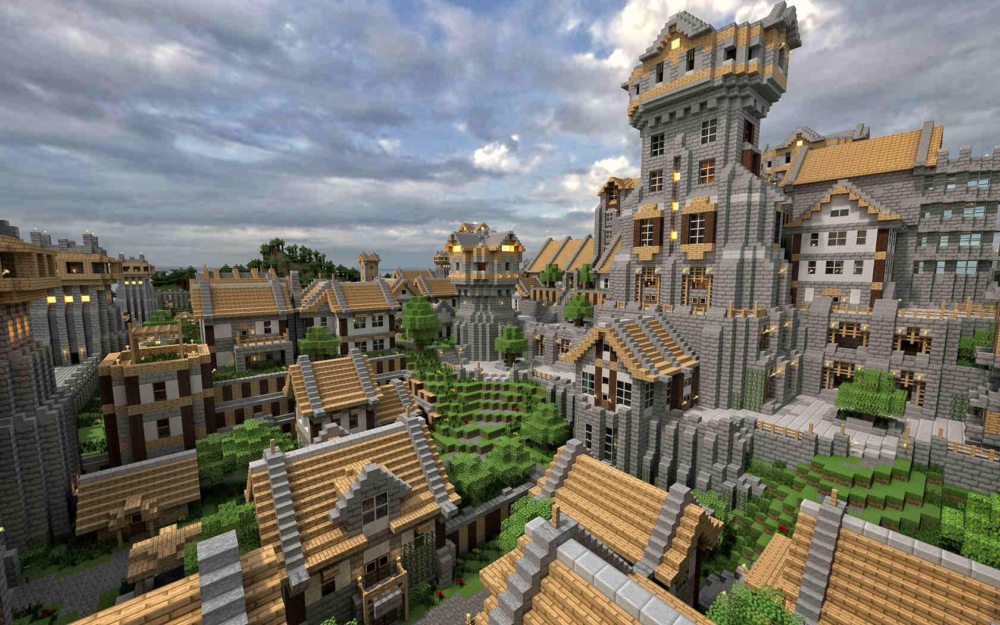

Игровой мир состоит из расставленных в фиксированном порядке кубов блоков и практически не имеет ограничений в пространстве. В Minecraft нет каких-либо конкретных целей или сюжета — всё строится на том, чтобы игрок импровизировал во время игры. В целом игра строится на добывании и размещении блоков, — различающимися между собой текстурой, физикой и другими признаками, — и создании предметов из ингредиентов. Возможность сооружать различные конструкции делает Minecraft схожей с конструктором Lego.
 ДОМОЙ